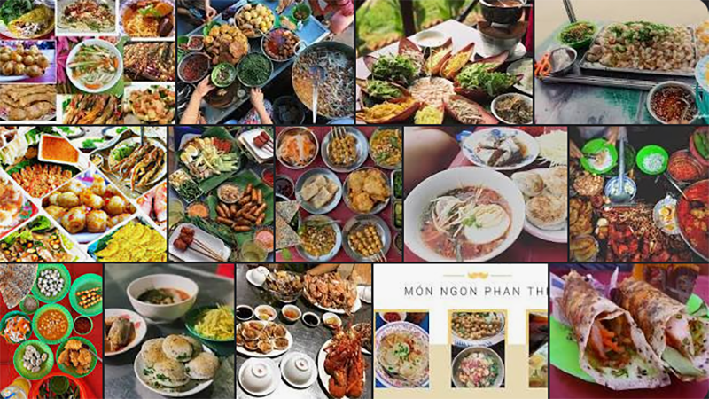
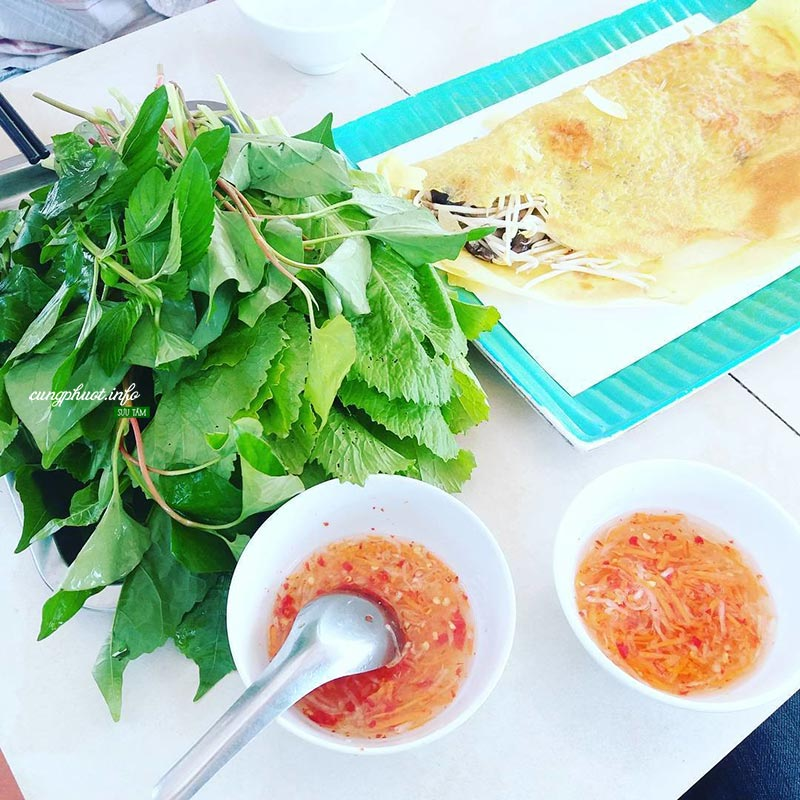
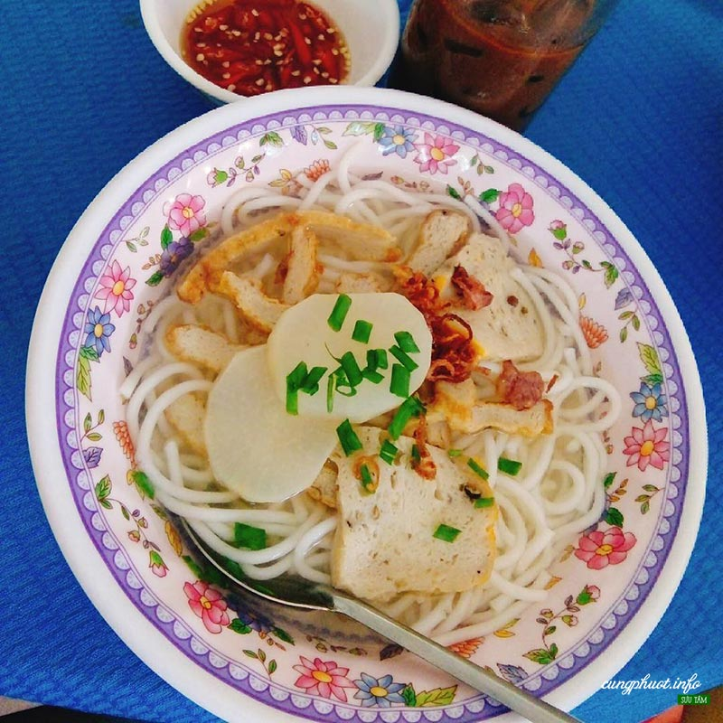
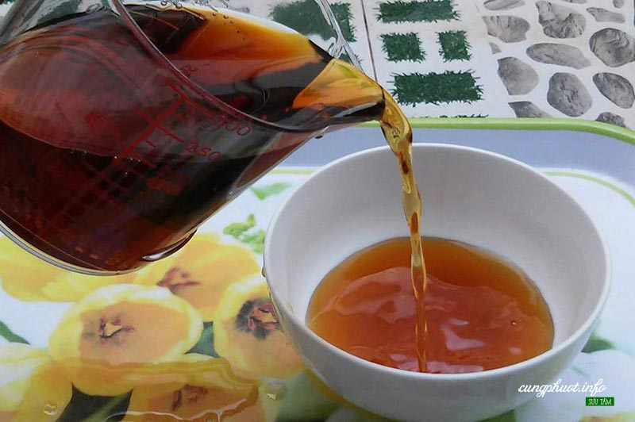
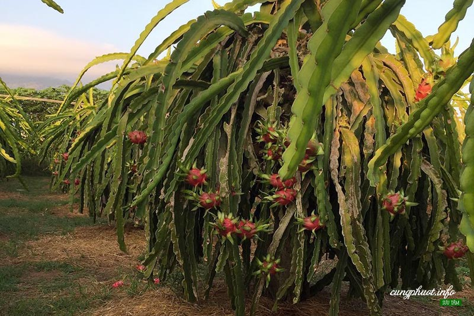

Mời các bạn du khách đến với Đặc Sản của Phan Thiết nơi không chỉ có các món hải sản không mà Phan Thiết còn có các món đặc biệt ngon và giản dị không cầu kì mà còn giá rẻ nữa nhé các bạn ơi!
Cùng Phượt – Phan Thiết là thủ phủ của Bình Thuận, mảnh đất cuối cùng của dải biển Nam Trung Bộ, nơi có địa danh du lịch nổi tiếng Mũi Né. Đến với Phan Thiết, các bạn sẽ có cơ hội được thưởng thức hai thứ “đặc sản” của vùng đất này là cát và gió. Với bờ biển trải dài, lộng gió, Phan Thiết được biết đến là một trong những nơi tuyệt vời nhất để chơi các môn thể thao lợi dụng sức gió trên biển. Với những đồi cát trắng, hồng, trải dài trên một diện tích rất rộng, rất nhiều bộ ảnh đẹp về Bình Thuận đã được thực hiện từ đây. Ngoài hai “đặc sản” này, còn có rất nhiều những món ăn ngon ở Phan Thiết đặc trưng cho nét ẩm thực biển Bình Thuận mà bạn không thể bỏ lỡ khi tới đây.
Ở nước ta, nhiều vùng có bánh xèo nhưng mỗi nơi một khác. Miền sông nước Nam bộ có bánh xèo bông điên điển, những góc phố TP HCM lại được biết đến với bánh xèo chảo ăn với cải bẹ xanh… Nhưng chẳng nơi nào nâng bánh xèo lên thành danh thực, có thể cung cấp cho tiệc cơ quan, liên hoan, sinh nhật… như bánh xèo Phan Thiết So với đại đa số cách ăn bánh xèo, thì Phan Thiết là vùng có cách ăn đơn giản và lạ lẫm nhất vì bất kỳ ai cũng ngạc nhiên khi không bắt gặp bất kỳ loại rau sống nào để cuốn bánh. Bởi lẽ, bánh xèo ở Phan Thiết được ăn kèm rau sống với nước mắm pha, tất cả cùng hòa quyện với nhau cùng lúc chứ không cầu kỳ cuốn từng miếng.
Một món ăn mang hương vị rất riêng của Phan Thiết . Bánh canh chả cá thì có của Trảng Bàng, Nha Trang, Bình Định … nhưng mùi vị ở Phan Thiết là đặc sắc hơn cả. Sợi bánh canh rời, đục chứ ko trong, ko dính như là bánh canh thường hay ăn, và thấy giống cọng bún bò. Không chỉ bán bánh canh và hầu hết các hàng bánh canh đều bán kèm với bánh mỳ xúi mại trứng luộc rất ngon và hấp dẫn . Ngoài ra bạn còn có thể ăn bánh mỳ nóng chấm với nước bánh canh rất ngon.
Món bánh canh là món ăn đặc trưng của các tỉnh ven biển miền Trung. Nếu như bánh canh xứ Thanh được nấu cùng tôm tươi. Sang đến bánh canh nổi tiếng thành Vinh lại được thêm vài quả trứng cút kèm miếng chả. Vào đến Quảng Bình, ngon nhất là bánh canh cá lóc ăn kèm chả ram rán giòm rụm và rau cải xanh. Ở đất cố đô, bánh canh lại không thể thiếu được vị của mắm ruốc. Nha Trang đặc sắc với bánh canh chả cá đậm chất biển….
Bánh rế có nguồn gốc xuất xứ tại Phan Rang (Ninh Thuận), dần dần lan rộng khắp miền Trung, rồi đến phía Nam, nhưng ngày nay phổ biến nhất và trở thành đặc sản ở Phan Thiết (Bình Thuận). Nghề làm bánh rế ở Phan Thiết hiện nay tập trung chủ yếu ở các khu vực nội thành, là nghề truyền thống của nhiều gia đình, nên mỗi nơi cho ra lò những chiếc bánh rế mùi vị, độ ngon khác nhau, nhưng tất cả đều tạo nên nét đặc trưng, hương vị rất riêng cho vùng đất này.
Bánh quai vạc khá giống với bánh bột lọc Huế. Bánh được làm nhỏ, với lớp vỏ dai, mềm, trong suốt, để lộ nhân tôm và hấp dẫn nhờ hương vị của nước mắm ngon. Món này cũng là món ăn được cho cả ngày. Không chỉ ăn kèm nước mắm, người Phan Thiết còn thích cho bánh quai vạc vào bánh mì, rưới nước mắm ớt lên.
Nước mắm Phan Thiết thuộc loại “lão làng” và đã có mặt ở hầu hết tại các thị trường trong nước. Nước mắm Phan Thiết đã có từ thời Phan Thiết có tên là Tổng Đức Thắng (1809). Những nhà làm nước mắm khi đó đã làm được nhiều nước mắm và bán ở Đàng Ngoài. Ðến đầu thế kỷ 20, nước mắm Phan Thiết đã có một nhãn hiệu nổi tiếng là nước mắm Liên Thành, được bán rộng rãi trong Nam ngoài Trung.
Khác biệt chung nhất, dễ nhận thấy nhất của nước mắm Phan Thiết so với nước mắm Phú Quốc và các vùng khác là màu vàng rơm (nếu nguyên liệu là cá cơm) hay màu nâu nhạt (cá nục), trong sánh, có mùi thơm nồng và vị ngọt đậm do đạm cao. Khác biệt đó của nước mắm Phan Thiết được giải thích vì quá trình ủ chượp dưới trời nắng và gió – nhiệt độ trung bình cao, độ ẩm thấp tác động tích cực đến cơ chế lên men – điều mà khó có địa phương nào được ưu đãi như vùng cực Nam Trung Bộ.
Bình Thuận có khí hậu, thổ nhưỡng phù hợp cho cây thanh long phát triển, cung cấp sản phẩm quanh năm cho thị trường nội địa và xuất khẩu; sản lượng chiếm 80% sản lượng của cả nước. Thanh long Bình Thuận có vỏ quả dày, khi chín màu đỏ có độ bóng cao, tai quả dày, cứng, chân tai rộng; thịt quả chắc giòn, có vị ngọt chua; mùi thơm đặc trưng, hạt nhỏ và ít.
